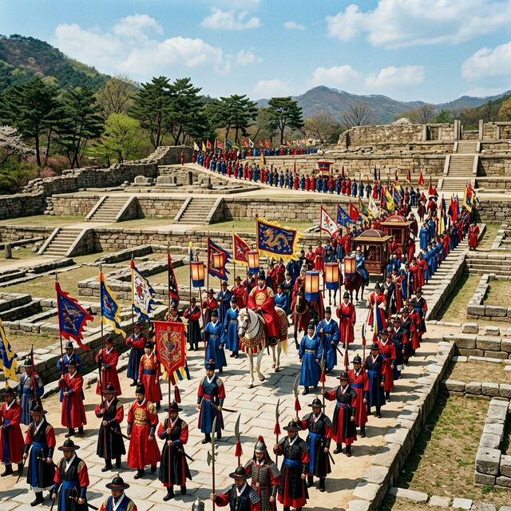
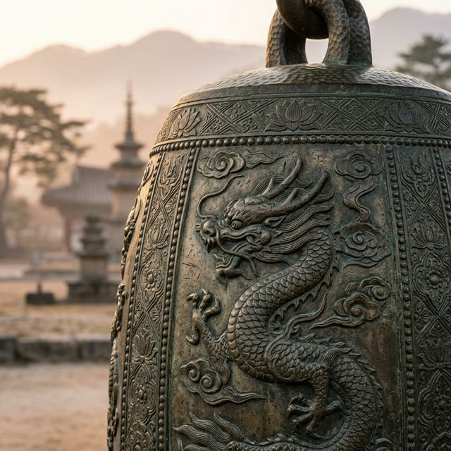
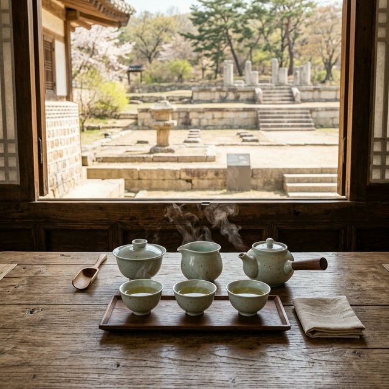

양주 회암사지 왕실축제 2026 일정 리포트 유네스코 세계유산 잠정목록 등재 기원 프로그램 총정리
시간을 거슬러 전설의 사찰, 회암사의 화려한 부활을 마주하다! 2026년 4월 18일, 경기도 양주의 넓은 벌판 위로 조선 최대의 사찰이었던 회암사지가 다시 한번 뜨겁게
타오릅니다. 올해로 9회째를 맞이한 '양주 회암사지 왕실축제'는 단순한 지역 행사를 넘어 유네스코 세계유산 등재를 염원하는 온 민족의 문화적 에너지가 결집된 자리입니다. 태조 이성계가 마음의 안식을
찾았던 치유의 공간, 그 생생한 역사의 현장으로 여러분을 안내합니다.
1. 2026 양주 회암사지 왕실축제 핵심 개요 및 일정 확인
제9회 양주 회암사지 왕실축제는 2026년 4월 17일(금)부터 4월 19일(일)까지 3일간 경기도 양주 회암사지 일원에서 개최됩니다. 올해의 주제는 '다시 뛰는 역사,
세계유산을 향하다'로 정해졌으며, 이는 다가오는 7월 유네스코 세계유산 위원회를 앞두고 회암사지의 고고학적 가치를 전 세계에 알리기 위한 정교한 기획이 담겨 있습니다. 주 무대인 회암사지뿐만 아니라
인근 옥정호수공원까지 축제 공간이 확장되어 도시 전체가 거대한 역사 테마파크로 변신했습니다.
축제의 시간표를 살펴보면 17일 금요일 저녁 옥정호수공원에서의 화려한 전야제를 시작으로, 18일 토요일에는 본 축제의 하이라이트인 대규모 어가행렬과 개막식이 예정되어 있습니다. 마지막 날인 19일
일요일은 다양한 체험 프로그램과 힐링 콘서트가 준비되어 있어 가족 단위 관람객들에게 최적의 시간을 선사합니다. 양주시는 이번 축제를 위해 셔틀버스 노선을 대폭 확충하고, 전국 각지에서 찾아올 관람객들을
위해 대규모 임시 주차장과 편의 시설을 완벽히 정비하였습니다.

회암사지 들판을 수놓는 태조 이성계의 대규모 어가행렬 재현 — AI 제작 이미지
2. 축제의 하이라이트: 태조 이성계 어가행렬의 화려한 위용
양주 왕실축제의 정체성이자 가장 큰 볼거리는 단연 '태조 이성계 어가행렬'입니다. 조선을 개국한 태조 이성계가 지친 몸과 마음을 치유하기 위해 회암사를 찾았던 역사적
사실을 기반으로 재구성된 이 퍼포먼스는 올해 더욱 압도적인 규모로 업그레이드되었습니다. 100명이 넘는 전통 의장대와 기마대, 그리고 취타대의 웅장한 가락이 울려 퍼지는 가운데 재현되는 조선 왕실의
기풍은 보는 이로 하여금 깊은 전율을 느끼게 하기에 충분합니다.
2026년에는 특히 시민 참여형 행렬 요소가 강화되었습니다. 사전 신청을 통해 선정된 양주 시민들이 직접 관복을 입고 행렬의 일원이 되어 옥정 시가지부터 회암사지까지 약
3km 구간을 함께 행진합니다. 구간마다 펼쳐지는 사자놀이, 판굿 등의 거리 공연은 자칫 지루해질 수 있는 행렬에 생동감을 불어넣으며 관람객들과 함께 호흡하는 축제의 장을 만듭니다. 어가행렬이 도착한
뒤 펼쳐지는 국왕의 진상 의례와 화려한 궁중 무용은 이곳이 바로 조선 왕실의 원찰이었음을 증명하는 핵심 포인트입니다.
3. 유네스코 세계유산 등재 기원: 세계유산 여정관의 의미
회암사지는 현재 유네스코 세계유산 잠정목록에 등재되어 정식 등재를 위한 최종 관문을 앞두고 있습니다. 축제장 한편에 마련된 '세계유산 여정관'은 단순한 홍보 부스가
아니라, 14세기 동아시아에서 유행했던 선종 사찰의 건축적 특징과 온돌 시설 등 회암사지만이 가진 독보적인 가치를 학술적이면서도 흥미롭게 풀어낸 전시 공간입니다. 터만 남은 사찰이 어떻게 세계적인
유산으로 평가받을 수 있는지에 대한 궁금증을 이곳에서 해소할 수 있습니다.
여정관 내부에서는 디지털 트윈 기술을 활용한 회암사 가상 복원 VR 체험이 진행됩니다. 지금은 돌무더기와 기단만 남아있지만, 과거 262칸에 달했던 거대 사찰의 웅장한
모습을 입체적으로 감상하며 당시 사찰 안에서 이루어졌던 왕실 사람들의 생활상을 엿볼 수 있습니다. 방문객들이 남기는 등재 응원 메시지는 향후 유네스코 위원회에 제출될 소중한 자료로 활용된다고 하니,
우리 문화유산의 자부심을 세우는 일에 작은 힘을 보태보시는 것은 어떨까요?

회암사지의 명물, 정교한 문양이 새겨진 청동금탁의 디테일 — AI 제작 이미지
4. 온 가족이 함께 즐기는 다양한 역사 체험 프로그램
양주 왕실축제가 경기도의 대표 축제로 자리 잡은 비결은 아이들의 눈높이에 맞춘 풍성한 체험 콘텐츠에 있습니다. 그중에서도 '정답 탁! 청동금탁 OX 퀴즈'는 회암사지 출토
유물인 금탁을 모티브로 하여 어린아이들도 쉽고 재미있게 참여할 수 있는 퀴즈 쇼입니다. 회암사와 관련된 역사적 상식을 배우며 푸짐한 경품까지 챙길 수 있어 매회 신청자가 줄을 잇는 인기
프로그램입니다.
또한, '회암사지 8개의 비밀을 찾아서' 프로그램은 넓은 유적지 곳곳을 누비며 미션을 수행하는 에듀테인먼트형 투어입니다. 유적지에 숨겨진 암호를 풀고 스탬프를 찍는 과정을
통해 자칫 어렵게 느껴질 수 있는 문화재가 아이들에게는 흥미로운 놀이터로 다가옵니다. 이외에도 전통 목판 인쇄 체험, 한지 연 만들기, 조선 시대 왕실 옷 입어보기 등 다양한 상설 부스가 운영되어
지루할 틈 없는 하루를 보장합니다.
5. 2026년 특별 기획: 미디어아트와 융복합 주제 공연
2026년 축제는 첨단 기술과 전통 예술의 만남에 더욱 집중했습니다. 축제 기간 매일 저녁 회암사지 박물관 외벽과 유적지 기단을 활용한 대규모 '미디어 파사드' 공연이
펼쳐집니다. 칠흑 같은 밤하늘 아래 화려한 빛으로 재현되는 회암사의 오색찬란한 모습은 관람객들에게 시공간을 초월한 비현실적인 감동을 선사합니다. 정적인 유적지가 빛을 통해 동적으로 살아 움직이는 광경은
이 축제의 백미라 할 수 있습니다.
메인 무대에서 펼쳐지는 주제 공연 역시 뮤지컬과 전통 소리, 현대 무용이 결합된 융복합 무대로 꾸며집니다. 태조 이성계와 무학대사의 우정, 그리고 회암사를 지키려 했던
사람들의 이야기를 탄탄한 서사로 엮어낸 이 공연은 매일 한 차례 황금 시간대에 상연됩니다. 단순히 보기에 좋은 공연을 넘어, 회암사가 가진 '치유와 안식'이라는 철학적 가치를 현대적인 감각으로
재해정하여 전 연령대의 공감을 이끌어낼 예정입니다.
6. 힐링과 명상: 왕실의 휴식을 직접 경험하는 시간
회암사는 과거 왕실 사람들의 휴양지이자 마음의 병을 고치던 '동양의 마음 치유 센터'와 같은 곳이었습니다. 이러한 장소적 특성을 살려 올해 축제에서는 '선명상 체험'과
'다도 클래스' 프로그램이 강화되었습니다. 회암사지 북쪽 산자락 아래 고요하게 마련된 명상존에서는 전문가의 안내에 따라 잠시 눈을 감고 600년 전 왕이 느꼈던 평온함을 직접 느껴볼 수 있습니다.
복잡한 일상을 벗어나 진정한 '쉼'이 필요한 분들에게 특히 추천하는 코스입니다.
체험형 프로그램의 일환으로 진행되는 사찰 음식 강연 역시 놓치지 말아야 할 행사입니다. 기름지지 않고 재료 본연의 맛을 살린 건강한 먹거리가 어떻게 우리 몸과 마음을
정화하는지에 대한 이야기를 전문가로부터 직접 듣고 시식할 수 있는 기회가 제공됩니다. 채식과 웰빙에 관심이 많은 MZ 세대부터 건강을 생각하는 중장년층까지 폭넓은 호응을 얻고 있는 이 프로그램은
현대인이 잊고 지냈던 식사의 소중함을 일깨워줍니다.

회암사지 유적을 배경으로 즐기는 고요한 다도 체험 — AI 제작 이미지
7. 방문객을 위한 주차 정보 및 대중교통 이용 팁
축제 기간 중 회암사지 일대는 극심한 정체가 예상되므로 자차 이용 시 조기 방문이 필수입니다. 양주시는 총 3,000대 규모의 임시 주차장을 확보했지만, 주말 오후에는
빠르게 만차되는 경우가 많습니다. 주차 요원들의 안내에 따라 행사장 외곽 보조 주차장에 주차한 뒤, 약 10분 간격으로 운행되는 셔틀버스를 이용하는 것이 스트레스 없이 축제를 즐기는 요령입니다.
셔틀버스는 양주역과 덕계역 등을 경유하여 운행되므로 지하철을 이용하는 것도 매우 현명한 선택입니다.
대중교통을 이용하시는 경우, 지하철 1호선 양주역이나 덕정역에서 하차하여 축제 전용 셔틀버스에 탑승하시면 행사장 입구까지 편안하게 이동할 수 있습니다. 축제장 규모가 매우
넓고 대부분이 비포장 풀밭이므로 하이힐보다는 편안한 운동화를 착용하시는 것을 강력히 권장합니다. 또한, 유모차는 행사장 입구 대여소에서 무료로 대여할 수 있으나 수량이 한정되어 있으니 영유아 동반
가족은 개인용 유모차를 지참하시는 것이 안전합니다.
8. 먹거리와 살거리: 양주의 맛과 향을 담은 로컬 마켓
축제의 재미에서 먹거리를 빼놓을 수 없겠죠? 회암사지 잔디광장 입구에는 '양주 로컬 푸드 마켓'이 대규모로 들어섭니다. 양주의 특산물인 부추와 딸기를 활용한 다양한
간식거리부터, 옛날 임금님께 진상되던 식재료로 만든 현대적인 퓨전 요리까지 미식가들의 입맛을 유혹합니다. 특히 양주 지역의 청년 상인들이 참여하는 푸드 트럭 존에서는 인스타그래머블한 멋진 비주얼의
음식들을 저렴한 가격에 맛볼 수 있습니다.
살거리 역시 풍성합니다. 양주의 도예 작가들이 직접 구워낸 분청사기 그릇과 소품들은 소장 가치가 충분하며, 회암사지 유물의 패턴을 현대적으로 재해석한 굿즈들은 이곳 아니면
구할 수 없는 특별한 기념품이 됩니다. 또한, 축제 기간 내 양주시 관내 상점에서 소비한 영수증을 인증하면 지역 화폐로 환급해주는 '플러팅 이벤트'가 진행되니, 맛있는 식사도 하고 혜택도 챙기는 알뜰한
여행을 계획해 보세요.
9. 방문 전 필수 체크리스트: 준비물과 유의사항
마지막으로 완벽한 나들이를 위해 챙겨야 할 물품들을 정리해 드립니다. 첫 번째는 자외선 차단 대책입니다. 회암사지는 사방이 탁 트인 넓은 부지라 그늘을 피할 곳이 마땅치
않습니다. 모자, 선글라스, 그리고 자외선 차단제를 꼼꼼히 준비하세요. 두 번째는 돗자리와 간이 의자입니다. 넓은 잔디밭 어디서든 편하게 앉아 공연을 관람할 수 있도록 가벼운 휴대용 의자를 챙긴다면
훨씬 여유로운 관람이 가능합니다.
또한, 야간 공연 관람을 계획하신다면 얇은 겉옷을 반드시 준비하시기 바랍니다. 양주 지역은 서울보다 기온이 낮고 해가 지면 급격하게 쌀쌀해지는 경향이 있습니다. 박물관
내부 관람 시에는 정숙을 유지해야 하며, 유적지 내에서는 문화재 보호를 위해 취사나 쓰레기 무단 투기가 엄격히 금지됩니다. 성숙한 시민 의식으로 우리 소중한 유산을 아끼는 마음까지 챙겨 오신다면,
2026년 봄날의 양주 여행은 여러분 인생 최고의 역사의 한 페이지로 남을 것입니다.
#양주회암사지왕실축제
#회암사지
#2026축제일정
#유네스코세계유산
#양주가볼만한곳
#어가행렬
#조선왕실축제
#경기도봄축제
#가족나들이장소
#역사체험학습